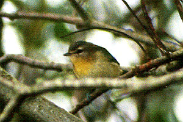

| These photographs accompany records that have been recently submitted to the committee. This record
has been ACCEPTED.  Philadelphia Vireo Vireo philadelphicus 2 Oct 96, NW of Ferndale, HUM 1997-052 © 1996 Sean McAllister Back to CBRC Rare Bird Photos |